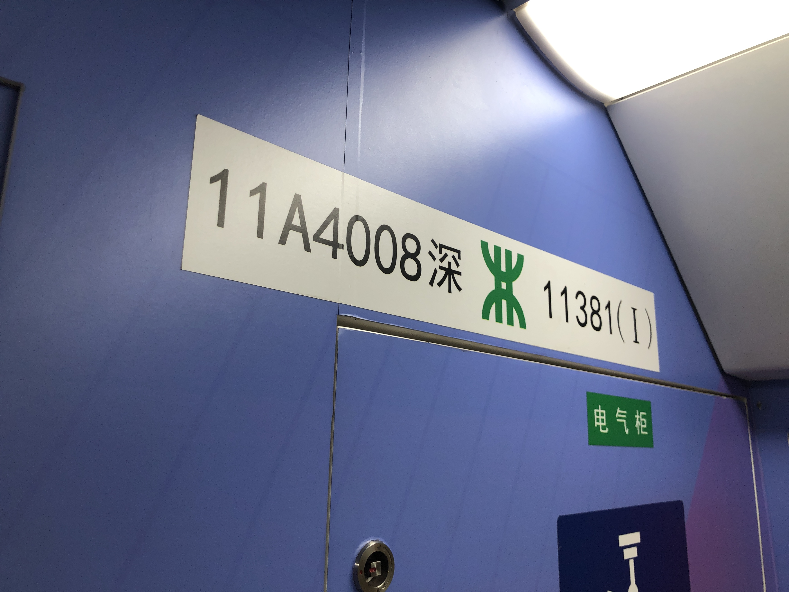

距离上次更新图文大概也有小半年了吧，我都差点忘记我有这个东西了，那么好，今天，来个图文板块的复活，新系列“技术探究”EP01和大家见面啦！那么长话短说，我们开始吧！
在深圳地铁的庞大网络中，每一列电客车都有其独一无二的“身份编码”。这些看似晦涩的数字与字母组合，实则是这座超大城市轨道交通系统高效运转的底层逻辑。
在上一期的探站系列里，我们沉浸于大剧院站的空间体验。而今天，我们不妨将视野拉远，从“个体”走向“系统”，试图破译深圳地铁的“资产”——列车资产编号背后的故事。
一、线路编号：从“罗宝”到“32”，时代的快速发展
如果你坐过十年以上的深圳地铁，大概会记得一个充满江湖气息的名字——“罗宝线”。没错，那就是今天的1号线。当年还有 “蛇口线”（现2号线）、“龙岗线”（现3号线）……每一条线都像是一条被冠以地名的“城市经脉”，听起来很接地气，但问题是——地名一多，新来的朋友、外地游客，甚至老深圳人自己都可能晕菜：“罗宝”？那...“蛇口”？
于是在2013年，深圳地铁干了一件“狠事”：把所有线路名字统统改为数字编号，干净利落，不留情面。从此，1、2、3、4、5…… 成为深圳人出行的“新符号”。
数字并非随机排列，它们基本按照建设时序与规划愿景交织演进：1、2、3、4、5、11号线 —— 这是深圳地铁的“开国元勋”，撑起了最早的骨架，从罗湖到宝安，从蛇口到龙岗，从市中心到机场把深圳的“心脏”和“四肢”连了起来。6、7、8、9、10号线 —— 这是“补网大军”，它们除了进最核心的老区，也填补了各片区大面积的空白，让地铁像毛细血管一样渗透进城市的每个角落。12、14、16号线 —— 这是深圳的“急先锋”。12号线串起南山宝安，被官方冠以“西部换乘王”称号，14号线更是以“东部快线”之名，把坪山、龙岗拉进了市中心半小时生活圈，让3号线过于拥堵的客流得到一部分缓解，16号线串联起中心城和坪山片区，在东北方向进一步拓宽地铁服务区域。
而最让人期待的的，是那一串“未来的成员”：15、17、19、20、22、25、27、29、32号线。这些属于 “五期建设蓝图” ，大多以加密线或外围快线的身份登场，比如15号线是深圳第一条真正意义上的环线，22号线将串联起观澜与福田中心。而至于为什么没有18号线、21号线、23号线？有规划空缺，也有预留变更，诸多其他因素无可避免，这些东西就像城市给未来的“留白”，懂的人自然懂。不过，这些五期线路一大部分已经获批且正在如火如荼地建设当中，
二、色彩代码：线路的“视觉名片”
如果数字是线路的名字，那颜色就是它的面孔。深圳地铁各线路拥有严格的色号标准（HEX）：
- 1号线 #01AF55 —— 贯穿东西的大动脉
- 2号线 #B95800 —— 蛇口线
- 3号线 #00A9E0 —— 龙岗进城的生命线
- 4号线 #D42E0F —— 港铁运营的南北干线
- 5号线 #9E4DAA —— 环中线
- 6号线 #01C4B7 —— 光明线
- 6号线支线 #027776 —— 光明支线
- 7号线 #0131AC —— 西丽线
- 8号线 #B95800 —— 盐田线
- 9号线 #896B70 —— 梅林线
- 10号线 #F67599 —— 坂田线
- 11号线 #672146 —— 机场线
- 12号线 #A092B2 —— 南宝线
- 13号线 #F6AD2D —— 石岩线的独特标识
- 14号线 #F4CB67 —— 东部快线的速度感
- 16号线 #181BA5 —— 龙坪线
- 20号线 #87DBDF —— 会展线
这些颜色不仅用于线路图，更贯穿于站内吊板、屏蔽门盖板、列车色带，形成了乘客无意识中信赖的导航符号。

三、列车编号：列车身份证的秘密
以3号线实际列车编号 03B3306 浦 0344 为例，我们可以将其拆解为六个部分：
- 03 —— 线路号，代表该列车配属于3号线；
- B —— 车型代码，表示B型车（深圳地铁常见车型有A、B等，A型车宽3米，B型车宽2.8米）；
- 33 —— 该批次采购的列车总数，即这一批次共有33列车；
- 06 —— 编组数，表示6节车厢编组（深圳多数线路为6节或8节编组）；
- 浦 —— 制造商缩写，代表中车浦镇车辆厂（深圳地铁主要供应商包括长客、浦镇）；
- 0344 —— 序列号，表示该列车是该线全部配车中的第44辆车（通常按采购顺序累计编号）。
这套编码体系让运营人员能快速识别列车所属线路、车型、编组及制造商信息，极大提升了调度与检修效率。同时，乘客也可以通过车号了解所乘列车的“身世”——它来自哪个厂家、属于哪个批次、在第几节编组。
四、为何关注“资产编号”？
对于普通乘客，这些数字是陌生的，可能只在会面时为了快速获取彼此位置使用：对于地铁爱好者，它们中有些特殊的编号能让彼此会心一笑（都是狗椅干的，bushi）；但对于地铁人，它们是沟通的语言。理解这套编码，我们才能真正读懂一座城市轨道交通网络的规划意图，也看穿那些埋在地下、写在车头的城市雄心。
下期预告：我们或许将拿起听音器，聊聊深圳地铁的“报站体系”变迁。敬请期待。